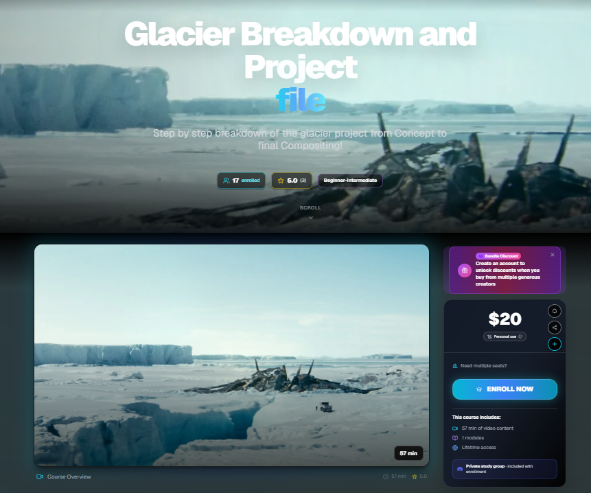
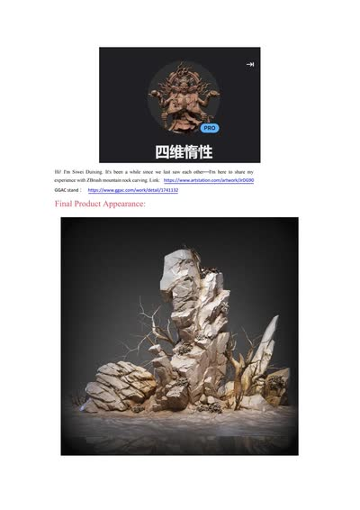
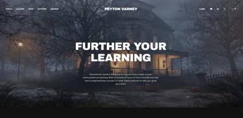
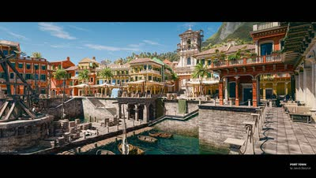
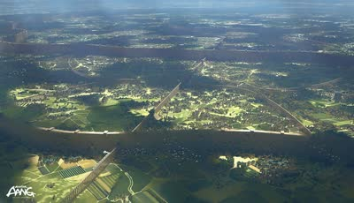
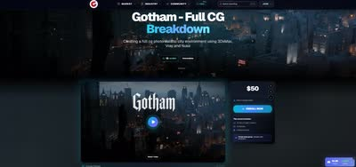
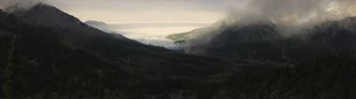
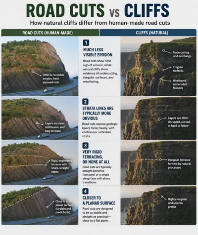
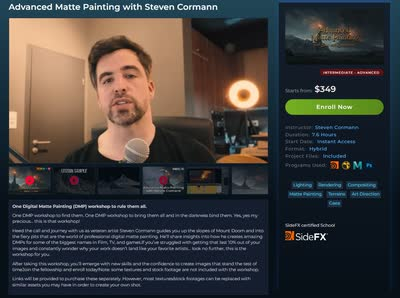

William Fiorentini氏による最新チュートリアル「Glacier Breakdown and Project file」がCG Loungeで公開されたこと。
URL
https://cglounge.studio/course/glacier-breakdown-and-project-file

William Fiorentini氏による最新チュートリアル「Glacier Breakdown and Project file」がCG Loungeで公開されたこと。









